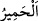

mekruhtur.
Envâru’l-meşârık’ta der ki: “Hayırlı kimseler nezdinde tercih edilen, namaz ve
benzeri durumlarda tekbir alırken sesi yükseltmekte ileri gitmenin mekruh olduğudur.
Fakat tazarru, tezellül ve riyâdan uzak bir itâat ile birlikte cehr ve ihfâ (açık ve gizli)
arasında orta bir hal/ses, âlimlerin ittifakıyla câizdir, mekruh değildir.”
İmam Nevevî (r.h.), zikri sesli yapmanın müstehab olduğunu bildiren hadislerle, zikri
sessiz yapmanın müstehab olduğuna dâir hadislerin[91] arasını şöyle telif etmiştir:
“Kişinin riyâya düşmekten, namaz kılanların veya uyuyanların rahatsız olmasından
korktuğu durumlarda zikri gizli yapmak efdaldir. Bunun dışındaki durumlarda ise zikri
açıktan yapmak daha fazîletlidir. Çünkü bu durumda amel daha çoktur, faydası
dinleyenlere de ulaşır. Böyle bir zikir, zikredenin kalbini uyandırır, tefekkür kuvvetini
artırır, kulaklarını açar, uykusunu dağıtır ve zindeliğini ziyâdeleştirir. Rasûlullah (s.a.),
selam verip namazı bitirdikten sonra yüksek sesle:
“Allah’tan başka hiçbir ilâh yoktur. O tektir ve ortağı yoktur. Mülk O’nundur,
hamd O’na âiddir. O her şeye kadirdir.”[92] diyerek zikrederdi.
Şöyle bir nükte nakledilir: Haccâc bir gün yanında bulunanlara: “Size göre en hoş ses
hangisidir?” diye sordu. Oradakilerden biri: “Sesi güzel olup da gecenin ortasında
Kur’ân okuyan bir okuyucunun sesinden daha güzel bir ses işitmedim.” dedi. Haccac:
“Bu güzel!” diye karşılık verdi. Başka biri: “Hanımım doğum sancıları içinde bırakıp
erkenden camiye yönelmişken bana birinin gelerek bana bir oğlan çocuğumun olduğunu
müjdelemesinden daha ziyade hoşnut olduğum bir söz duymadım.” dedi. Haccâc buna
da: “Ne kadar da güzel” diye mukâbelede bulundu. Orada bulunan Şu‘be b. Alkame
Temîmî ise: “Hayır! Allâh’a yemin olsun ki, aç olup sofranın hazırlanma sesini
işitmekten daha çok hoşlandığım bir ses asla duymadım.” dedi. Bunun üzerine Haccâc:
“Temîm oğulları! Siz her zaman azık ve yemek sevgisini tercih edersiniz.” dedi.
“Unutma ki, seslerin en çirkini” yâni sahih aklın reddedeceği ve çirkinliğine
hükmedeceği en kötü ses “merkeplerin sesidir.”
“” eşek mânâsındaki “ kelimesinin çoğuludur. “ kelimesi, cem‘/çoğul
bir kelimeye müfred/tekil olarak izâfe edilmiştir. Çünkü maksad, eşek cinsinin bütün
fertlerinin teker teker seslerinin durumunu anlatmak değil; bilakis diğer havyan
cinslerinin sesleri arasında sadece bu cinsin sesinin durumunu beyandır.
Ebü’l-Leys şöyle der: “Gerek Araplar gerekse diğer insanlar arasında merkep sesinin
çirkin olduğu biliniyordu. Bununla birlikte merkebin dışındaki diğer bazı hayvanların
seslerinin bu sesten daha çirkin olması mümkündür. Fakat Allah Teâlâ, çirkinliği bilinen
söz konusu merkep sesini insanlara misal vermiştir. Çünkü bu sesin, cehennemde
olanların sesi gibi başı tiz; sonu ise pestir. Onu işiten ondan bütünüyle nefret eder.”